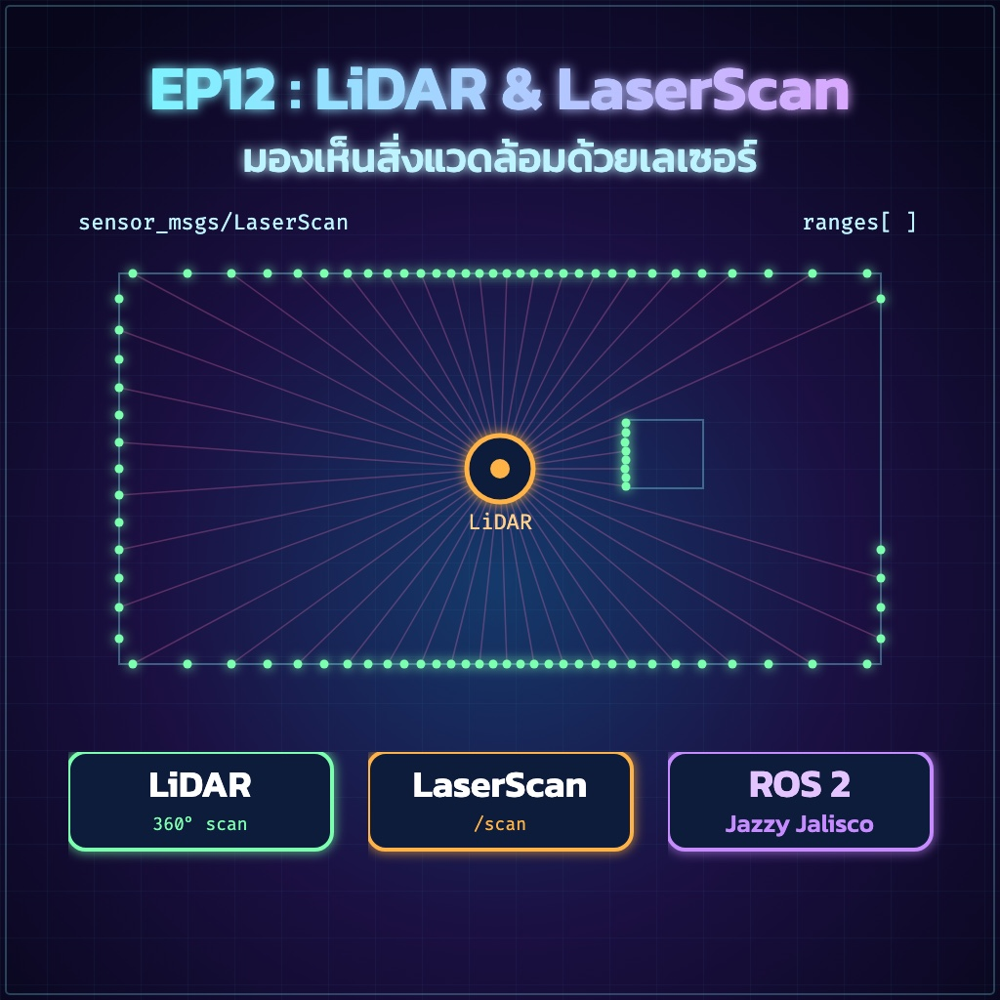
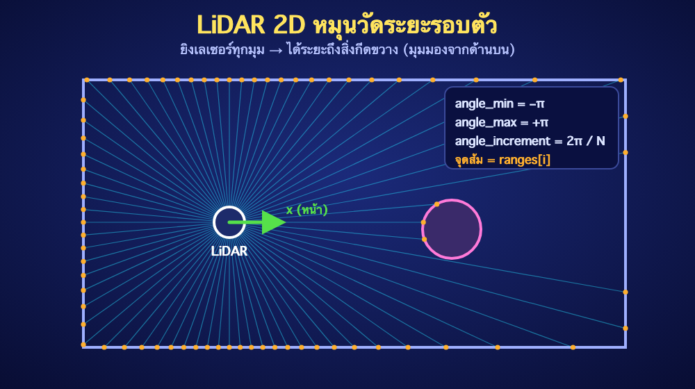
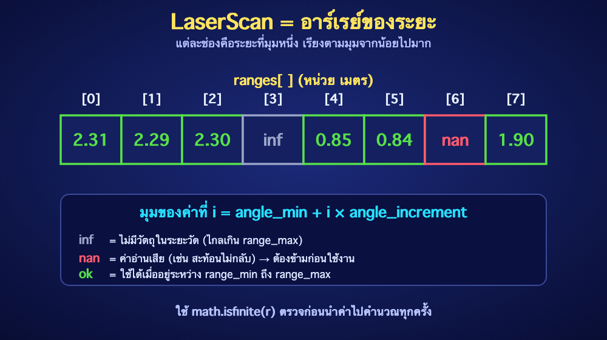

ย้อนกลับ

EP12
LiDAR และ LaserScan
"ทำความเข้าใจข้อมูลที่ LiDAR ส่งมา และนำไปใช้ตรวจจับสิ่งกีดขวาง"
🎯 จุดประสงค์การเรียนรู้
- อธิบายหลักการทำงานของ LiDAR 2D และข้อมูล
sensor_msgs/LaserScan ได้
- อ่านค่า
angle_min, angle_increment และ ranges[] แปลงเป็นมุมและระยะได้
- จัดการค่า
inf / nan ก่อนนำข้อมูลไปใช้ได้
- ตรวจสอบ /scan ด้วย
ros2 topic และ RViz2 และเขียน Node ตรวจจับสิ่งกีดขวางได้
1. LiDAR คืออะไร?
LiDAR 2D คือเซนเซอร์ที่หมุนยิงแสงเลเซอร์ไปรอบตัวและวัดเวลาที่แสงสะท้อนกลับ เพื่อคำนวณ "ระยะ" ถึงสิ่งกีดขวางในแต่ละทิศ หมุนครบรอบหนึ่งครั้งจะได้ระยะรอบตัวเป็นร้อยจุด เรียกว่า 1 Scan และส่งออกมาซ้ำ 5–10 ครั้งต่อวินาที

- ข้อดี: แม่นยำ ไม่ขึ้นกับแสงในห้อง ใช้สร้างแผนที่ (EP13) และหลบสิ่งกีดขวาง (EP14) ได้
- ข้อจำกัด: เห็นเฉพาะระนาบเดียว (2D) กระจกและวัตถุโปร่งใสอาจวัดไม่ได้
2. ข้อมูล LaserScan
LiDAR ส่งข้อมูลผ่าน Topic /scan ด้วยชนิด sensor_msgs/msg/LaserScan
| ฟิลด์ | ความหมาย |
|---|
header.frame_id | Frame ของ LiDAR เช่น laser_frame (ต้องมี TF จาก EP9) |
angle_min / angle_max | มุมเริ่มและมุมสิ้นสุดของการสแกน (เรเดียน) |
angle_increment | มุมที่ห่างกันระหว่างค่าแต่ละช่อง (เรเดียน) |
range_min / range_max | ระยะที่เซนเซอร์วัดได้ (เมตร) ค่านอกช่วงนี้ไม่น่าเชื่อถือ |
scan_time | เวลาที่ใช้หมุนครบหนึ่งรอบ (วินาที) |
ranges[ ] | อาร์เรย์ระยะ (เมตร) เรียงตามมุมจาก angle_min |
intensities[ ] | ความแรงของสัญญาณสะท้อน (บางรุ่นเท่านั้น) |

⚠️ ระวังค่าพิเศษ: inf คือไม่พบวัตถุในระยะวัด และ nan คือค่าอ่านเสีย ถ้าไม่ตรวจก่อนนำไปคำนวณ เช่น หาค่าต่ำสุด โปรแกรมอาจได้คำตอบผิดหรือหยุดทำงาน
3. เชื่อมต่อ LiDAR จริง
ขั้นตอนทั่วไปเหมือนกันทุกรุ่น ส่วนชื่อ Package และไฟล์ Launch ให้ดูตามคู่มือผู้ผลิตของรุ่นที่ใช้ (เช่น Slamtec RPLIDAR, LDROBOT LD19, YDLIDAR)
- ต่อ LiDAR เข้าคอมพิวเตอร์หรือ Raspberry Pi แล้วตรวจชื่อพอร์ต:
ls -l /dev/ttyUSB* /dev/ttyACM*
- ถ้าขึ้น Permission denied ให้เพิ่มผู้ใช้เข้ากลุ่ม
dialout (เหมือน EP7)
- ติดตั้ง ROS 2 Driver ของรุ่นนั้น แล้วสั่ง Launch ตามคู่มือ
- ตั้ง
frame_id ของ Driver ให้ตรงกับ Frame ที่มี TF เช่น laser_frame
- ตรวจว่ามี Topic:
ros2 topic list | grep scan
ยังไม่มี LiDAR? ใช้ Node จำลองในหัวข้อ 5 ฝึกได้ทุกขั้นตอนต่อจากนี้
4. ตรวจสอบ /scan จาก Terminal
source /opt/ros/jazzy/setup.bash
ros2 topic info /scan -v # ดูชนิดข้อมูลและ QoS
ros2 topic hz /scan # ตรวจอัตราการส่ง
ros2 topic echo /scan --once --field angle_min
ros2 topic echo /scan --once --field angle_increment
ros2 topic echo /scan --once --field range_max
✅ Expected Result: hz ใกล้ 5–10 Hz (ตามรุ่น), angle_min เป็นลบ เช่น −3.14 และ range_max ตรงกับสเปกเซนเซอร์
5. เขียน Node ฝึกใช้ LaserScan
mkdir -p ~/ros2_ws/src
cd ~/ros2_ws/src
ros2 pkg create --build-type ament_python brobot_lidar \
--dependencies rclpy sensor_msgs
fake_scan.py — จำลอง LiDAR
ไฟล์ ~/ros2_ws/src/brobot_lidar/brobot_lidar/fake_scan.py ห้องสี่เหลี่ยม 4×4 เมตร มีสิ่งกีดขวางโผล่หน้าหุ่นยนต์ทุก 5 วินาที
import math
import rclpy
from rclpy.node import Node
from rclpy.qos import qos_profile_sensor_data
from sensor_msgs.msg import LaserScan
class FakeScan(Node):
"""จำลอง LiDAR ในห้องสี่เหลี่ยม 4x4 เมตร ใช้ฝึกเมื่อยังไม่มีเซนเซอร์จริง"""
def __init__(self):
super().__init__('fake_scan')
self.count = 360
self.tick = 0
self.pub = self.create_publisher(LaserScan, 'scan', qos_profile_sensor_data)
self.timer = self.create_timer(0.1, self.publish_scan)
self.get_logger().info('Fake LiDAR publishing /scan at 10 Hz')
def publish_scan(self):
msg = LaserScan()
msg.header.stamp = self.get_clock().now().to_msg()
msg.header.frame_id = 'laser_frame'
msg.angle_min = -math.pi
msg.angle_increment = 2.0 * math.pi / self.count
msg.angle_max = msg.angle_min + (self.count - 1) * msg.angle_increment
msg.scan_time = 0.1
msg.time_increment = msg.scan_time / self.count
msg.range_min = 0.12
msg.range_max = 12.0
ranges = []
for i in range(self.count):
angle = msg.angle_min + i * msg.angle_increment
c, s = abs(math.cos(angle)), abs(math.sin(angle))
r = min(2.0 / c if c > 1e-6 else math.inf,
2.0 / s if s > 1e-6 else math.inf)
# สลับทุก 5 วินาที: มีสิ่งกีดขวางโผล่หน้าหุ่นยนต์ที่ระยะ 0.45 เมตร
if abs(angle) < math.radians(15) and (self.tick // 50) % 2 == 1:
r = 0.45
# จำลองมุมด้านหลังที่อ่านค่าไม่ได้
if abs(angle) > math.radians(175):
r = math.inf
ranges.append(r)
msg.ranges = ranges
self.pub.publish(msg)
self.tick += 1
def main(args=None):
rclpy.init(args=args)
node = FakeScan()
try:
rclpy.spin(node)
except KeyboardInterrupt:
pass
finally:
node.destroy_node()
if rclpy.ok():
rclpy.shutdown()
if __name__ == '__main__':
main()
obstacle_monitor.py — ตรวจสิ่งกีดขวางด้านหน้า
ไฟล์ ~/ros2_ws/src/brobot_lidar/brobot_lidar/obstacle_monitor.py หาระยะที่ใกล้ที่สุดในมุมหน้า ±30° และเตือนเมื่อใกล้กว่า 0.5 เมตร
import math
import rclpy
from rclpy.node import Node
from rclpy.qos import qos_profile_sensor_data
from sensor_msgs.msg import LaserScan
class ObstacleMonitor(Node):
def __init__(self):
super().__init__('obstacle_monitor')
self.declare_parameter('stop_distance', 0.5) # เมตร
self.declare_parameter('front_angle_deg', 30.0) # ตรวจ +-30 องศาด้านหน้า
self.stop_distance = self.get_parameter('stop_distance').value
self.front_angle = math.radians(self.get_parameter('front_angle_deg').value)
self.create_subscription(
LaserScan, 'scan', self.scan_callback, qos_profile_sensor_data)
def scan_callback(self, msg):
closest = math.inf
for i, r in enumerate(msg.ranges):
# ข้ามค่า inf / nan และค่านอกช่วงที่เซนเซอร์วัดได้
if not math.isfinite(r) or r < msg.range_min or r > msg.range_max:
continue
angle = msg.angle_min + i * msg.angle_increment
angle = math.atan2(math.sin(angle), math.cos(angle)) # ปรับให้อยู่ใน -pi..pi
if abs(angle) <= self.front_angle and r < closest:
closest = r
if closest < self.stop_distance:
self.get_logger().warning(
f'Obstacle ahead: {closest:.2f} m', throttle_duration_sec=1.0)
else:
self.get_logger().info(
f'Path clear (closest {closest:.2f} m)', throttle_duration_sec=1.0)
def main(args=None):
rclpy.init(args=args)
node = ObstacleMonitor()
try:
rclpy.spin(node)
except KeyboardInterrupt:
pass
finally:
node.destroy_node()
if rclpy.ok():
rclpy.shutdown()
if __name__ == '__main__':
main()
ทำไมใช้ qos_profile_sensor_data? LiDAR ส่งแบบ Best Effort (เน้นเร็ว ยอมให้ข้อมูลบางชุดหายได้) Subscriber ต้องใช้ QoS ที่เข้ากัน ไม่เช่นนั้นอาจไม่ได้รับข้อมูลเลย (ตรงกับหัวข้อ QoS ใน EP4)
6. ลงทะเบียนและรัน
แก้ setup.py:
entry_points={
'console_scripts': [
'fake_scan = brobot_lidar.fake_scan:main',
'obstacle_monitor = brobot_lidar.obstacle_monitor:main',
],
},
cd ~/ros2_ws
colcon build --symlink-install --packages-select brobot_lidar
source install/setup.bash
# Terminal 1 (ข้ามถ้าใช้ LiDAR จริง)
ros2 run brobot_lidar fake_scan
# Terminal 2
ros2 run brobot_lidar obstacle_monitor --ros-args -p stop_distance:=0.5
✅ Expected Result: ข้อความ Path clear สลับกับ Obstacle ahead: 0.45 m ทุกประมาณ 5 วินาที
7. ดูภาพ LiDAR ใน RViz2
# ถ้าใช้ Node จำลอง ต้องมี TF ของ laser_frame ก่อน (จาก EP9)
ros2 run tf2_ros static_transform_publisher \
--x 0.0 --y 0.0 --z 0.20 \
--frame-id base_link --child-frame-id laser_frame
rviz2
- ตั้ง Fixed Frame เป็น
base_link
- Add → LaserScan แล้วเลือก Topic เป็น
/scan
- ใน LaserScan → Topic → Reliability Policy เลือก Best Effort
- เพิ่ม Size เป็น 0.05 เพื่อให้เห็นจุดชัดขึ้น
⚠️ RViz2 ไม่แสดงจุด? สาเหตุที่พบบ่อยที่สุดคือ Reliability Policy ไม่ตรงกัน (ต้องเป็น Best Effort) รองลงมาคือ Fixed Frame ผิดหรือไม่มี TF ไปยัง laser_frame
🧪 LAB 12.1 — เขียนระบบเตือนสิ่งกีดขวาง
- รัน
fake_scan และ obstacle_monitor ดูข้อความเตือน
- เปลี่ยน
stop_distance เป็น 0.3 และ 0.8 แล้วสังเกตว่าข้อความเตือนเปลี่ยนไปอย่างไร
- เปลี่ยน
front_angle_deg เป็น 90 แล้วอธิบายสิ่งที่เปลี่ยน
- (ถ้ามี LiDAR จริง) ใช้มือบังหน้าเซนเซอร์ที่ระยะต่างๆ แล้วเทียบกับค่าที่อ่านได้
เกณฑ์ผ่าน: ข้อความเตือนขึ้นเมื่อสิ่งกีดขวางอยู่ใกล้กว่าค่าที่ตั้ง และไม่ขึ้นเมื่อมีแต่ค่า inf / nan
🧪 LAB 12.2 — หาทิศทางที่โล่งที่สุด
- แก้
obstacle_monitor.py ให้หาช่องที่มีระยะไกลที่สุด (ที่ค่าไม่ใช่ inf / nan)
- แปลงตำแหน่งช่องเป็นมุม ด้วย
angle_min + i × angle_increment
- แสดงผลเป็นองศา เช่น
Most open direction: 35 deg
เกณฑ์ผ่าน: ผลลัพธ์ตรงกับที่เห็นใน RViz2
⚠️ Common Problems
| อาการ | แนวทางแก้ |
|---|
| RViz2 ไม่แสดงจุด | ตั้ง Reliability เป็น Best Effort และตรวจ Fixed Frame / TF |
| Log ขึ้น Message Filter dropping message: frame ... | frame_id ของ /scan ไม่มี TF ตรวจชื่อ Frame ให้ตรงกับ static transform |
| ranges เป็น inf ทั้งหมด | เซนเซอร์ถูกบัง ระยะเกิน range_max หรือ Driver ตั้งค่าไม่ถูก |
| ภาพกลับด้านหรือหมุนผิดทิศ | ตรวจ yaw ใน static TF ว่าตรงกับทิศที่ติดตั้ง LiDAR จริง |
| ข้อมูลกระตุกหรืออัตราต่ำ | ตรวจ ros2 topic hz, สายและแหล่งจ่ายไฟ, baud rate ของรุ่นนั้น |
| ค่า min ผิดพลาด | กรอง inf / nan และค่านอก range_min–range_max ก่อนหาค่าต่ำสุด |